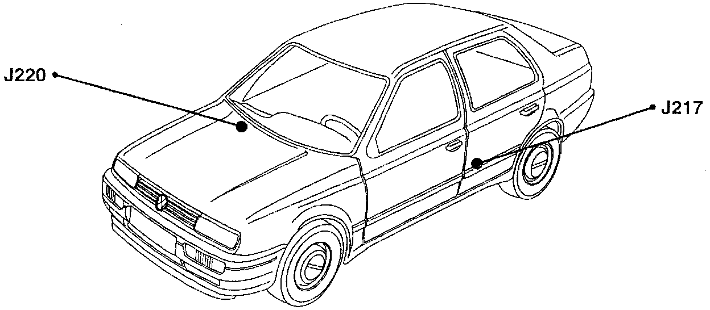
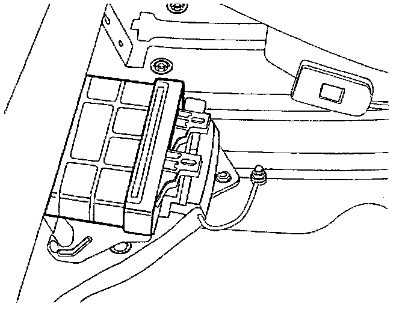

Operation CHARM
: Car repair manuals for everyone.
Home
>>
Volkswagen
>>
1997
>>
GTI (1H1) V6-2.8L (AAA)
>>
Repair and Diagnosis
>>
Powertrain Management
>>
Transmission Control Systems
>>
Relays and Modules - Transmission and Drivetrain
>>
Relays and Modules - A/T
>>
Control Module
>>
Locations
>>
Transmission Control Module
Transmission Control Module
J217, J220:

Component Location View
J217:

Component View
J217 Transmission Control Module (TCM)
-
Beneath rear seat, left-side